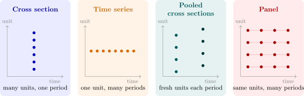

1.2 Types of economic data
The structure of a data set determines which assumptions are plausible and which methods apply, so it is the first thing to settle about any data set.
- (i)
- Cross-sectional data are observations on many units (households, firms, districts, countries) at a single point or period of time. The units are written \(i = 1, \dots , n\) and the order in which they are listed carries no information.
- (ii)
- Time series data are observations on one unit at successive points in time, \(t = 1, \dots , T\), usually equally spaced (annual, quarterly, monthly, daily). The order is essential.
- (iii)
- Pooled cross sections combine two or more cross sections drawn independently at different times. Each period has its own sample of units, and the same unit is not, in general, observed twice.
- (iv)
- Panel (longitudinal) data follow the same units over several periods, giving observations \(y_{it}\) with \(i = 1, \dots , n\) and \(t = 1, \dots , T\).
- (i)
- The Living Conditions Monitoring Survey of a given year records the income, expenditure and household size of several thousand Zambian households: a cross section.
- (ii)
- Annual copper production in Zambia from 1964 to the present, or the monthly consumer price index: time series.
- (iii)
- Two rounds of the household survey, each drawing a fresh random sample of households, combined into one data set to see whether the relation between income and food expenditure changed between the rounds: pooled cross sections.
- (iv)
- The investment, market value and capital stock of the same ten firms recorded every year for twenty years: a panel. So is a survey that revisits the same households in successive years.

Why the distinction matters
- In a random cross section the observations are independent, because the units were drawn independently. Their disturbances may have different variances, since a large household’s spending varies more than a small one’s. Heteroscedasticity is typically a cross-section problem.
- Successive observations in a time series are almost never independent: this year’s consumption is close to last year’s. Dependence over time (autocorrelation), trends and unit roots are time-series problems, and asymptotic theory for dependent data replaces the textbook theory for independent samples.
- A panel observes each unit repeatedly, so it can separate a unit’s permanent characteristics from the effect of the variables that change over time. Unobserved ability in Example 1.1.5 is fixed for a worker; with panel data it can be differenced away with panel methods. Neither a cross section nor a pooled cross section can do this.
Two further distinctions recur. Experimental data come from a design in which the investigator assigns the explanatory variable at random; observational data do not. And variables are either flows, measured over a period (income, consumption, output), or stocks, measured at a point (capital, wealth, money supply). Mixing a stock with a flow requires care about timing: the capital stock that produced this year’s output is the one at the start of the year.
Notation
Throughout, \(Y\) is the dependent variable and \(X\) an explanatory variable (regressor). A subscript \(i\) indexes cross-section units and \(t\) indexes time. Lower-case letters denote deviations from sample means, \[ x_i = X_i - \bar X, \qquad y_i = Y_i - \bar Y , \] a convention that makes the formulas of the two-variable model much shorter. From the treatment of the \(k\)-variable model onwards the observations are stacked into the vector \(Y\) and the matrix \(X\), and the model is written \(Y = X\beta + U\). In matrix sections \(Y\), \(X\) and \(U\) denote these arrays; the meaning is always clear from the context.
Questions on this section
Stuck on something here? Ask below and it stays attached to this topic.